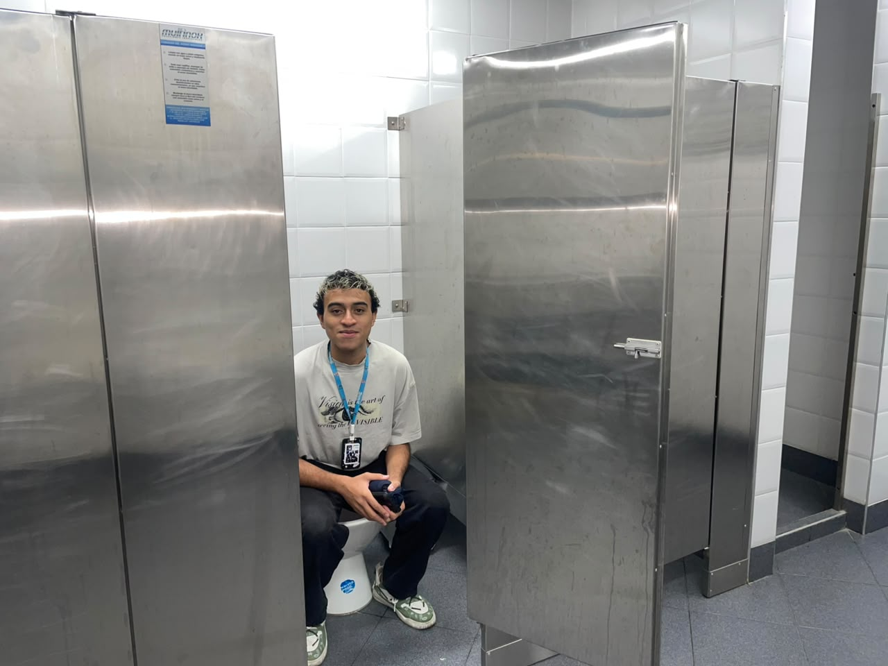
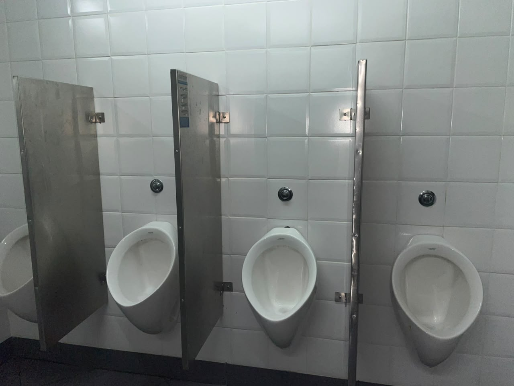
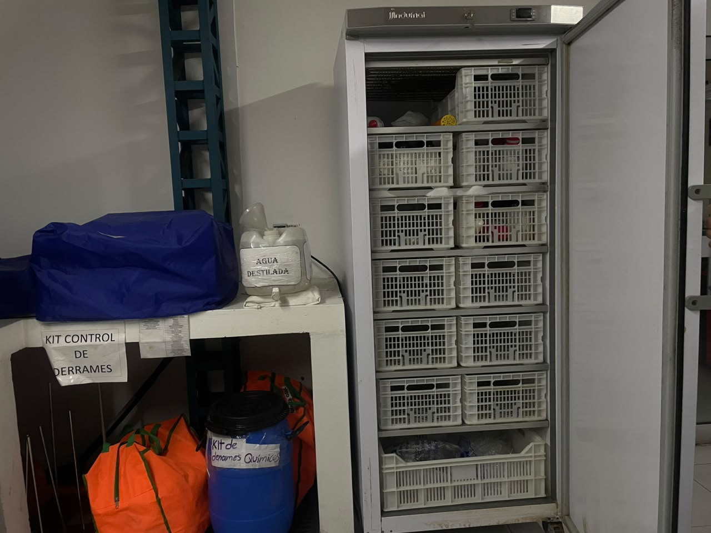
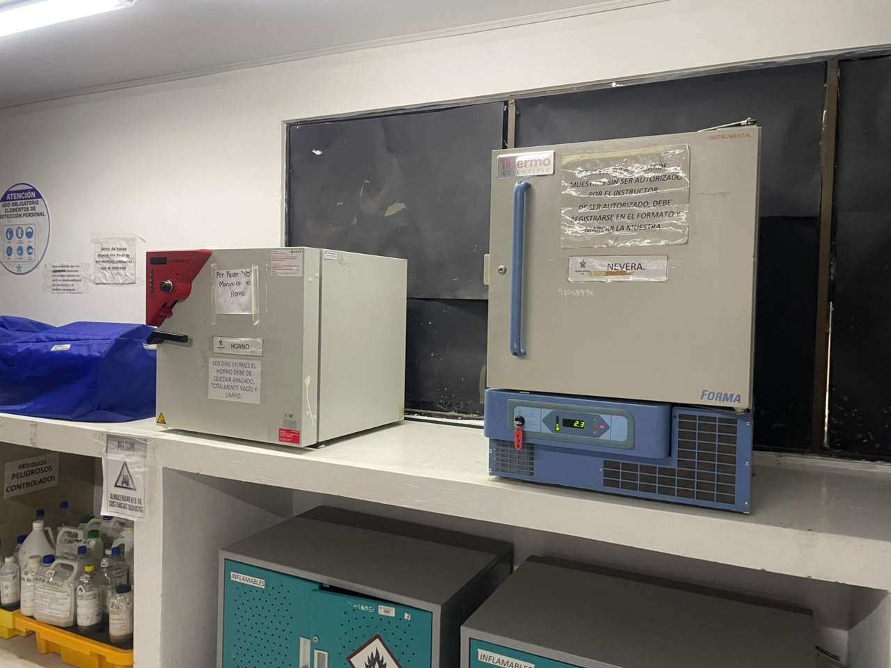
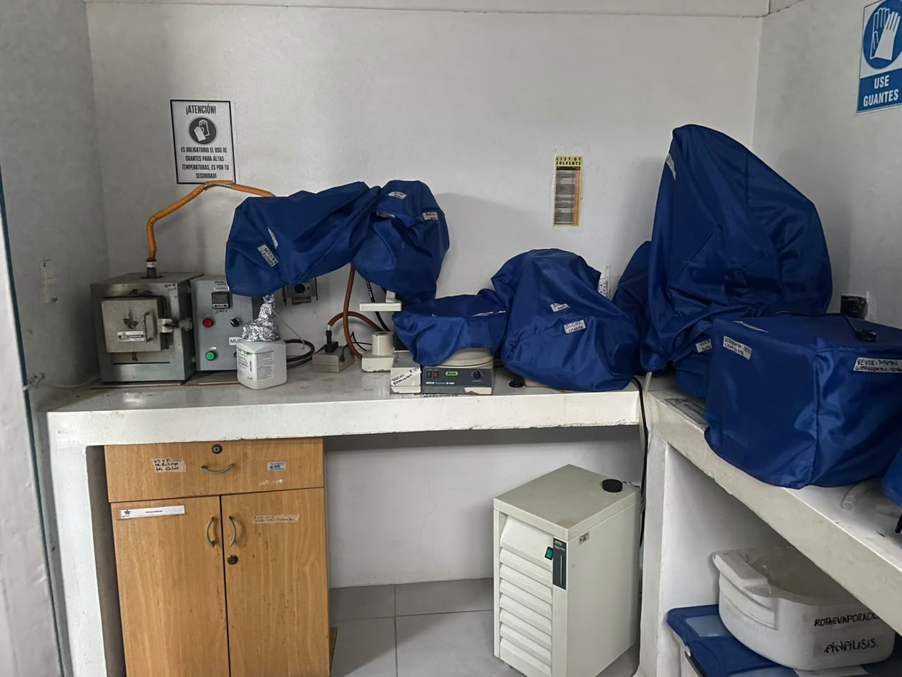
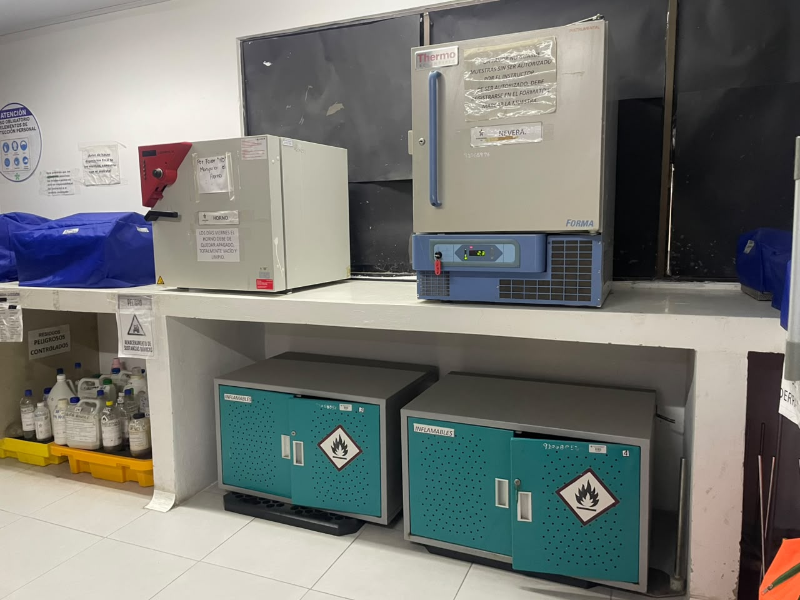
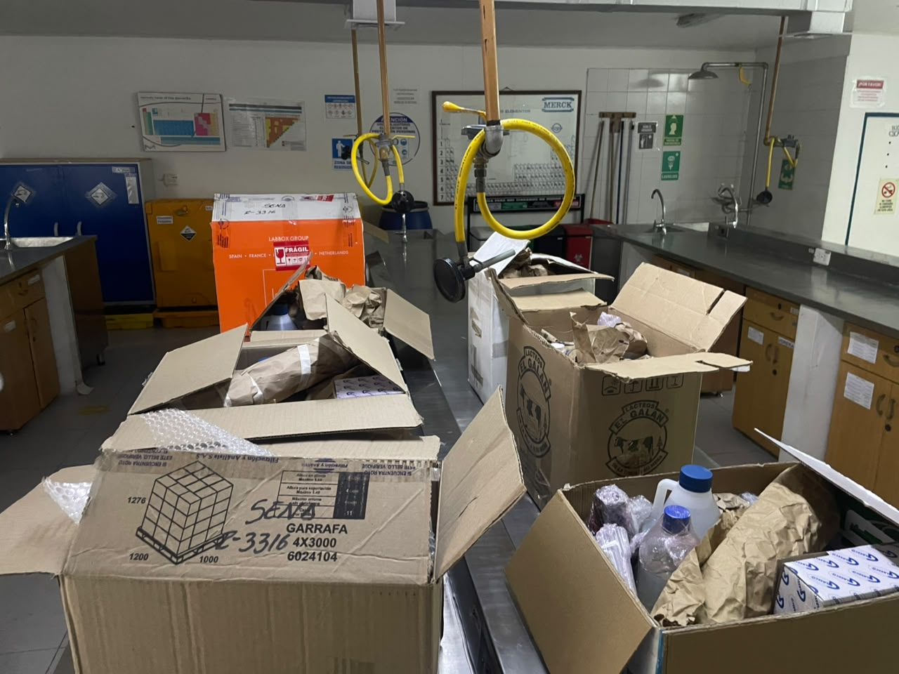
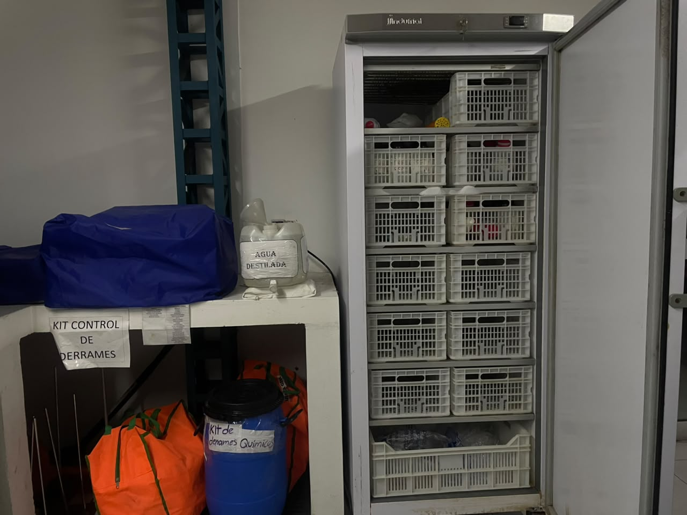
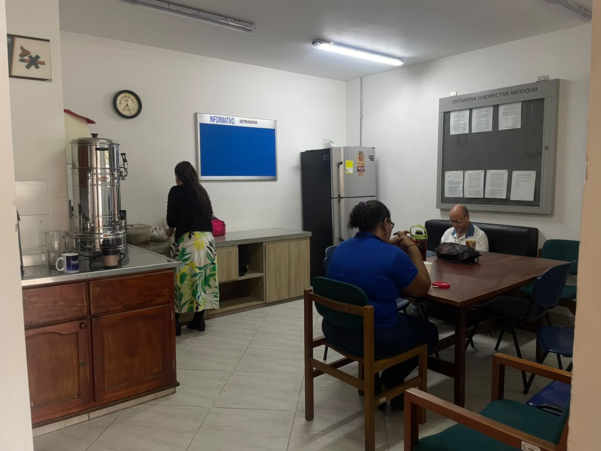
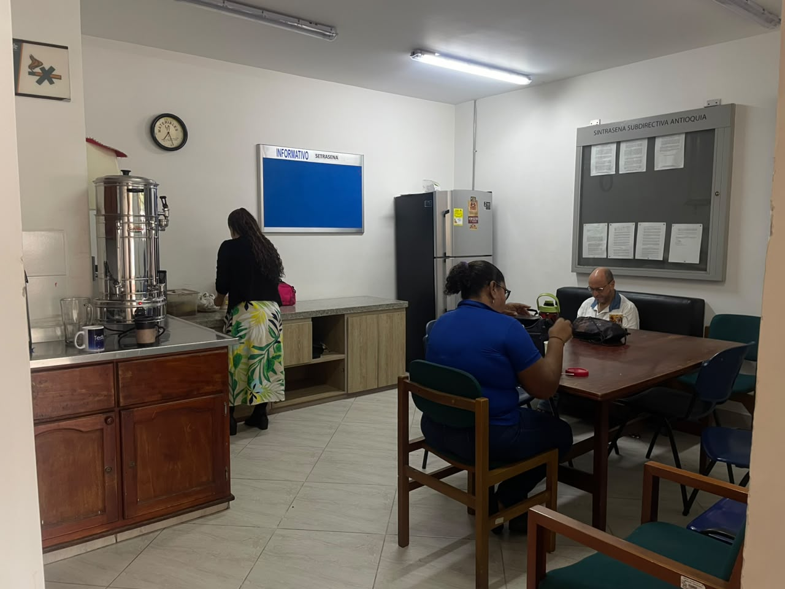

Riesgo Biológico
Exposición a microorganismos patógenos como virus, bacterias, hongos y parásitos presentes en áreas de alta concurrencia, preparación de alimentos o manejo de desechos biológicos.
Afectaciones al Cuerpo y la Salud
- Infecciones estomacales y respiratorias: Propagación rápida de gripes (como Influenza o COVID-19) y cuadros de intoxicación estomacal.
- Dermatitis y micosis: Infecciones por hongos en la piel por contacto con humedad en duchas o superficies contaminadas.
- Alergias severas: Cuadros de rinitis y asma por inhalación involuntaria de esporas de hongos en zonas poco ventiladas.
Medidas de Prevención
- Lavado antibacterial de manos y uso de gel desinfectante en comedores y baños.
- Uso de Elementos de Protección Personal (EPP) en enfermería y laboratorios biológicos.
- Protocolos estrictos de limpieza en la cafetería y correcta disposición de residuos sólidos.
Ubicación en el CTGI
Se localiza en los baños públicos, la cafetería del centro, áreas de almacenamiento de basuras y en el área de enfermería.

Galería Fotográfica — Riesgo Biológico (Fotos Reales CTGI)
Imágenes capturadas en las instalaciones del Centro Textil y de Gestión Industrial.

Orinales y puntos de agua en baterías sanitarias Lavadero con acumulación de suciedad y riesgo de proliferación de microorganismos
Lavadero con acumulación de suciedad y riesgo de proliferación de microorganismos

Refrigeración de muestras biológicas y microbiológicasRiesgo Físico
Exposición a factores ambientales que pueden lesionar físicamente a las personas: ruido de maquinaria, iluminación inadecuada, vibraciones y temperaturas elevadas.
Afectaciones al Cuerpo y la Salud
- Hipoacusia (Pérdida de audición): Causada por el ruido constante de equipos mecánicos e industriales y música a alto volumen.
- Fatiga visual y dolores de cabeza: Debidos a iluminación deficiente en computadores o exceso de brillo directo.
- Deshidratación y fatiga térmica: Afecta el rendimiento y la presión por alta temperatura y escasa ventilación corporal.
Medidas de Prevención
- Uso de protectores auditivos (tapones o copas) en talleres de producción y ruido excesivo.
- Iluminación regulada e hidratación constante en zonas deportivas y talleres.
- Mantenimiento de ventiladores y aire acondicionado para control de temperaturas extremas.
Ubicación en el CTGI: Gimnasio
El punto de referencia principal es el Gimnasio del CTGI (ruido continuo de máquinas y pesas, música, temperaturas de esfuerzo) y los talleres metalmecánicos y de confecciones.

Galería Fotográfica — Riesgo Físico (Fotos Reales CTGI)
Imágenes capturadas en las instalaciones del Centro Textil y de Gestión Industrial.
Taller textil con maquinaria pesada y ruido continuo

Equipos térmicos y hornos de laboratorio
Área de exposición térmica y uso de guantes especiales.jpeg) Caja de breakers deteriorada y expuesta junto a cancha deportiva
Caja de breakers deteriorada y expuesta junto a cancha deportiva
Riesgo Químico
Contacto, inhalación o absorción cutánea de agentes químicos dañinos como solventes, polvos suspendidos, humos metálicos, gases y vapores de combustibles.
Afectaciones al Cuerpo y la Salud
- Quemaduras y dermatitis química: Lesiones en la piel por contacto con ácidos, desengrasantes y resinas sin guantes.
- Intoxicación por inhalación: Cefaleas intensas y desmayos por inhalar gases de soldadura, combustión o vapores de pintura.
- Problemas pulmonares crónicos: Asma e inflamaciones alveolares por exposición crónica a polvos y humos de procesos industriales.
Medidas de Prevención
- Uso estricto de respiradores con filtros específicos para vapores orgánicos y gases de soldadura.
- Uso de guantes de nitrilo/neopreno de caña larga y gafas químicas.
- Disponer de cabinas de extracción de aire e instalación de estaciones lavaojos de emergencia.
Ubicación en el CTGI
Áreas críticas: taller de mantenimiento de automotores (gasolina, aceites), taller de soldadura (humos de soldadura), taller de pintura (solventes) y laboratorios de química.

Galería Fotográfica — Riesgo Químico (Fotos Reales CTGI)
Imágenes capturadas en las instalaciones del Centro Textil y de Gestión Industrial.

Garrafas y envases con reactivos químicos en laboratorio
Kit completo para contención de derrames químicosRiesgo Psicosocial
Factores de la organización laboral que alteran el bienestar de los trabajadores y aprendices, enfocados en la carga laboral excesiva, horarios demandantes y estrés mental continuo.
Afectaciones al Cuerpo y la Salud
- Trastornos digestivos y cardiovasculares: Colon irritable, gastritis e hipertensión debido a los altos niveles de cortisol por estrés.
- Insomnio y fatiga mental: Dificultad para conciliar el sueño y sensación constante de cansancio cognitivo y físico.
- Trastorno de ansiedad e irritabilidad: Afectación directa a la salud mental, derivando en cuadros de Burnout o depresión laboral.
Medidas de Prevención
- Programación de jornadas y cargas académicas/laborales equilibradas.
- Implementación de pausas activas cognitivas y dinámicas de integración.
- Canales de apoyo psicológico para aprendices e instructores del centro.
Ubicación en el CTGI: Áreas Administrativas
Afecta a todas las empresas y organizaciones en general. En el centro se enfoca críticamente en las oficinas administrativas, coordinación académica, atención al cliente y salas de instructores debido a la carga de datos e interacción constante.

Galería Fotográfica — Riesgo Psicosocial (Fotos Reales CTGI)
Imágenes capturadas en las instalaciones del Centro Textil y de Gestión Industrial.

Salas de bienestar, pausas activas y trabajo en equipo Área de descanso, café y convivencia docente
Área de descanso, café y convivencia docente
Riesgo Biomecánico
Derivado del esfuerzo muscular y articular ante posturas incómodas o prolongadas, manipulación manual de cargas pesadas y movimientos repetitivos.
Afectaciones al Cuerpo y la Salud
- Lumbalgias y lesiones de columna: Hernias discales por levantar cajas de herramientas u objetos pesados doblando la espalda.
- Túnel Carpiano y Tendinitis: Lesiones en muñecas e inflamación de tendones debido al digitado repetitivo en salas de computadores.
- Espasmos musculares y dolor cervical: Contracturas por mantener la cabeza inclinada o la espalda encorvada en sillas no ergonómicas.
Medidas de Prevención
- Uso de mobiliario ajustable y ergonómico (sillas con soporte lumbar, pantallas a nivel de los ojos).
- Capacitación en higiene postural y técnicas seguras para el levantamiento manual de cargas.
- Realizar pausas activas osteomusculares con estiramientos de extremidades cada 2 horas.
Ubicación en el CTGI
Presente en las aulas de informática y diseño (posturas sedentarias prolongadas), en el almacén general del centro y en talleres de mantenimiento donde se cargan repuestos y materiales de gran peso.
Galería Fotográfica — Riesgo Biomecánico (Fotos Reales CTGI)
Imágenes capturadas en las instalaciones del Centro Textil y de Gestión Industrial.
Postura de pie (bípeda) prolongada durante la operación de telares
 Posturas forzadas en niveles inferiores de almacenamiento
Posturas forzadas en niveles inferiores de almacenamiento
 Levantamiento y transporte manual de materiales pesados en taller
Levantamiento y transporte manual de materiales pesados en taller
Condiciones de Seguridad
Peligros vinculados a la infraestructura, el uso de maquinaria y herramientas: incluye riesgo eléctrico (electrocución), accidentes de tránsito internos, caídas de altura y atrapamientos mecánicos.
Afectaciones al Cuerpo y la Salud
- Fracturas, contusiones y muertes por caídas: Lesiones traumáticas graves debido a caídas de escaleras, techos o andamios.
- Electrocución y quemaduras graves: Paso de corriente eléctrica a través del cuerpo por contacto con tableros energizados defectuosos.
- Amputaciones y aplastamientos mecánicos: Accidentes con engranajes o maquinaria pesada sin resguardos.
Medidas de Prevención
- Uso obligatorio de arnés de cuerpo completo y líneas de vida certificadas para tareas superiores a 2.0 metros.
- Cumplimiento estricto del protocolo de bloqueo de energías peligrosas (LOTO) en tableros eléctricos.
- Instalación de guardas físicas en partes móviles de tornos, fresas y motores industriales.
Ubicación en el CTGI
Localizado en los talleres de mantenimiento industrial, electricidad y automatización (electricidad, alturas), escaleras y rampas de acceso comunes, y vías internas de circulación (accidentes de tránsito).

Galería Fotográfica — Condiciones de Seguridad (Fotos Reales CTGI)
Imágenes capturadas en las instalaciones del Centro Textil y de Gestión Industrial.
Estructura certificada de formación para trabajo en alturas
 Vista frontal de andamios para práctica técnica
Vista frontal de andamios para práctica técnica
 Instalaciones de andamios y niveles de trabajo en altura
Instalaciones de andamios y niveles de trabajo en altura
Fenómenos Naturales
Situaciones fortuitas causadas por desastres naturales fuera del control directo humano, tales como sismos, inundaciones locales y tormentas eléctricas.
Afectaciones al Cuerpo y la Salud
- Lesiones por aplastamiento: Fracturas o asfixia causadas por desprendimiento de cielo raso, luminarias o colapso estructural en un terremoto.
- Quemaduras y shock eléctrico: Paro cardíaco provocado por el impacto indirecto o directo de descargas atmosféricas (rayos).
- Traumas psicológicos y pánico: Crisis nerviosas severas y asfixia por avalanchas humanas debido a una evacuación caótica.
Medidas de Prevención
- Identificación plena y señalización clara de rutas de evacuación y puntos de encuentro del CTGI.
- Simulacros de evacuación programados periódicamente para toda la comunidad SENA.
- Instalación y mantenimiento preventivo de sistemas de pararrayos y canales de desagüe pluvial.
Ubicación en el CTGI
Monitoreo continuo en las laderas de vegetación del centro (deslizamiento por lluvias), en puntos de encuentro exteriores y en infraestructuras con techos extensos.

Galería Fotográfica — Fenómenos Naturales (Fotos Reales CTGI)
Imágenes capturadas en las instalaciones del Centro Textil y de Gestión Industrial.
Mitigación de deslizamientos en zonas de pendiente del centro
 Desechos y escombros de muros exteriores caídos
Desechos y escombros de muros exteriores caídos
 Erosión de suelo en laderas por escorrentía pluvial
Erosión de suelo en laderas por escorrentía pluvial